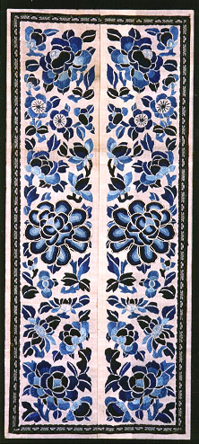

義助慰安婦 —— 李敖百件珍藏義賣藝術品（第45件） 品 名：C14. 「繡片一對」 預估價：4 萬 成交價：4 萬 說 明： 刺繡是民間藝術重要的一環。好的畫如繡，看起來是立體的；好的繡如畫，看起來是平面的。此件作品是成對出現，水藍色的框裱搭配得宜，色澤相當漂亮。 
刺繡是民間藝術重要的一環。好的畫如繡，看起來是立體的；好的繡如畫，看起來是平面的。此件作品是成對出現，水藍色的框裱搭配得宜，色澤相當漂亮。